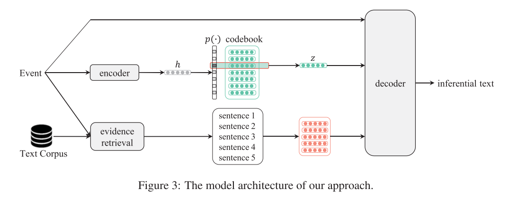
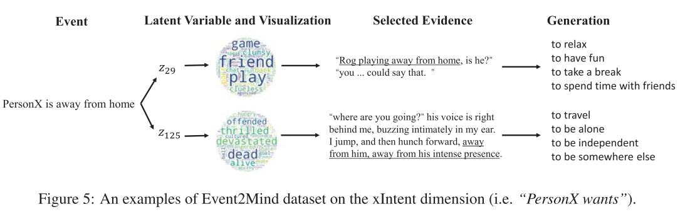

推理文本生成 | EA-VQ-VAE
题外话
今天是我的生日，希望能看到这篇博客的你天天开心。如果今天还恰好是你的生日，希望你生日快乐！
简介
EA-VQ-VAE 是微软团队于 2020 年发表的《Evidence-Aware Inferential Text Generation with Vector Quantised Variational AutoEncoder》中提出的模型，该文发表在 ACL 上。该文的主要工作是利用 VQ-VAE 进行推理文本生成。推理文本生成定义为，给定一个事件（例如 “A 偷看了 B 的日记”），从多个维度对该事件进行推断（“A 的心理状态”，“A 的目的”）。而 EA-VQ-VAE 中的 EA（Evidence-Aware）指的是利用证据来进行推理文本生成。
实现方法
下图展示了整个模型的流程：给定事件 \(x\) 后，经过 VQ-VAE 将其映射为离散的隐变量 \(z\)，根据事件 \(x\) 从文本语料中检索证据，再一起投喂给解码器输出最终的推理文本 \(y\)。下面逐项介绍模型的细节。

VQ-VAE
VQ-VAE 的详细介绍可以看我的上一篇博客。论文使用的 VQ-VAE 与标准的 VQ-VAE 最主要的区别在于，普通的 VQ-VAE 生成是数据 \(x\)，而在推理文本生成任务中，生成的是以符合事件 \(x\) 的推理文本 \(y\)，换而言之，这是一个条件模型，叫它 VQ-CVAE 可能更恰当一点。基于此，下面所述的后验分布 \(q_\phi(z|x,y)\) 与先验分布 \(p_\theta(z|x)\) 均与标准的 VQ-VAE 有所不同。
本文使用的 VQ-VAE 分为以下三个部分：
- codebook：对应 VQ-VAE 中的隐变量嵌入空间，只是换了个名字，同样是一张 \(R^{k*d}\) 的表，由 \(k\) 个维度为 \(d\) 的隐变量组成
- 后验分布 \(q_\phi(z|x,y)\)：同样是一个独热分布，使用最近邻算法将编码器输出 \(h_(x,y)\) 映射到最近的隐变量 \(z'\)
- 先验分布 \(p_\theta(z|x)\)：先利用预训练的语言模型（例如 RoBERTa）将事件编码为隐藏状态 \(h\)，，再将其映射为 k 个类别，即 \(p_\theta(z|x)=softmax(hW_k)\)
证据的检索与选择
去除事件中的停用词后，在大规模文本语料中使用 Elastic Search 引擎检索事件，并选取前 K 个得分最高的句子。论文使用的语料库基于 BookCorpus，由一万多篇故事书组成，因为作者认为故事中会对事件的起因和结果介绍地较为清晰。
证据的选择与隐变量类似，在训练阶段和推理阶段有着不同的逻辑。在训练阶段，事件 \(x\) 与推理文本 \(y\) 均已知，例如给定事件 “A 读了 B 的日记”，与推理文本 “A 感到很愧疚”，那么证据 “A 偷了 B 的日记” 就比 “B 把日记给 A 看” 更合理，此时我们想要建模的就是 \(q(c|x,y)\)（c 代表事件上下文，即证据）与 \(p(c|x)\)。考虑到已经有一个后验分布 \(q_\phi(z|x,y)\)，那么我们可以直接利用隐变量来完成证据的选择，即建模 \(p(c|z)\), 而不是再引入一个复杂的神经网络。对于一组证据（\(c_\phi\) 代表填充的空证据）\(\{c_1,c_2,\dots,c_K,c_\phi\}\)，使用 Transformer 将其编码为向量 \(\{h_{c_1},h_{c_2},\dots,h_{c_K},h_{c_\phi}\}\)。\(p_s(c|z)\) 与 \(q_\phi(z|x,y)\) 类似，也是一个独热分布，再通过最近邻算法选取最近的证据，即： \[ p_s(c_k|z)= \begin{cases} 1 &if\ k=\arg\min_j||h_{c_j}-z||_2 \\ 0 &otherwise \end{cases} \]
\[ c_z=c_k\ where\ k=\arg\min_j||h_{c_j}-z||_2 \]
值得注意的是，作者没有使用注意力机制得到的 “软” 分布，而是借鉴 VQ-VAE，采用了一种独热分布将 \(z\) 映射到最近的 \(c\)。这样的优点是一定程度上降低了学习的难度，由于 \(z\) 与 \(c\) 处在同一个语义空间，解码器利用起来的效率会更高。而且这样做也更为统一。但我总觉得注意力机制得到的结果会更好一点，论文里没有进行比较属实有点伤。
解码器
解码器使用的是预训练的 GPT-2，是一个基于 Transformer 的语言模型。这里就不多赘述了，有兴趣的小伙伴可以去了解一下 GPT 家族。
训练过程
首先单独训练 VQ-VAE 与 codebook，再训练基于后验分布 \(q_\phi(z|x,y)\) 的证据感知解码器。
VQ-VAE
首先只根据隐变量 \(z\) 重构推理文本 \(y\)，损失函数与 VQ-VAE 损失函数类似： \[ loss_{rec}=-logp(y|x,h_{(x,y)}+sg[z-h_{(x,y)}])+||sg[h_{(x,y)}]-z||_2^2+\beta||h_{(x,y)}-sg[z]||_2^2 \]
真实的先验分布可以使用频率近似（\(N_{(x)}\) 代表包含 \(x\) 事件的数据数量）： \[ p(z|x)=\sum_{(x,y_i)\in D}\frac{q_\phi(z|x,y_i)}{N_{(x)}} \] 通过 KL 散度来优化先验分布 \(p_\theta(z|x)\): \[ loss_{prior}=KL(p(z|x)||p_\theta(z|x)) \]
不过这里为什么不像 CVAE 一样，直接优化后验分布与先验分布间的 KL 散度，暂时还不是很理解。
证据感知解码器
这一部分通过最大化边际似然进行训练： \[ \begin{align} logp(y|x)&=E_{z\sim q_\phi}[\sum_{c\in C}logp_m(y|x,c)p_s(c|z)]\\ &=log(p_m(y|x,c_{z'}))+logp_s(c_{z'}|z') \end{align} \] 然而，由于真实的证据是未知的，直接优化上述似然函数可能得不到正确结果。具体而言，与 \(z'\) 最近的 \(c_{z'}\) 不一定就是真实有用的证据，如果我们已知真实的证据标签 \(c\)，损失函数中应该还有一项是 \(||c-c_{z'}||_2\)。为解决这个问题，原论文采取了强化学习的方法： \[ R=\delta(p_m(y|x,c_{z'})-p_m(y|x,c_r)) \]
\[ \begin{align} logp(y|x)&=logp_m(y|x,c_{z'})+Rlogp_s(c_{z'}|z')\\ &=logp_m(y|x,c_{z'})-R|||h_{c_{z'}}-z'||_2^2 \end{align} \] 其中，\(\delta(x)\) 当 x 大于 0 时为 1，否则为 - 1。\(c_r\) 为随机选取的与 \(c_{z'}\) 不同的证据。这样设计的原因是，正确的证据相较于其他证据应该能够提高生成正确推理文本的概率。当 \(R\) 为正时，\(logp(y|x)\) 会更大，进而激励模型选择正确的证据。
个案研究
